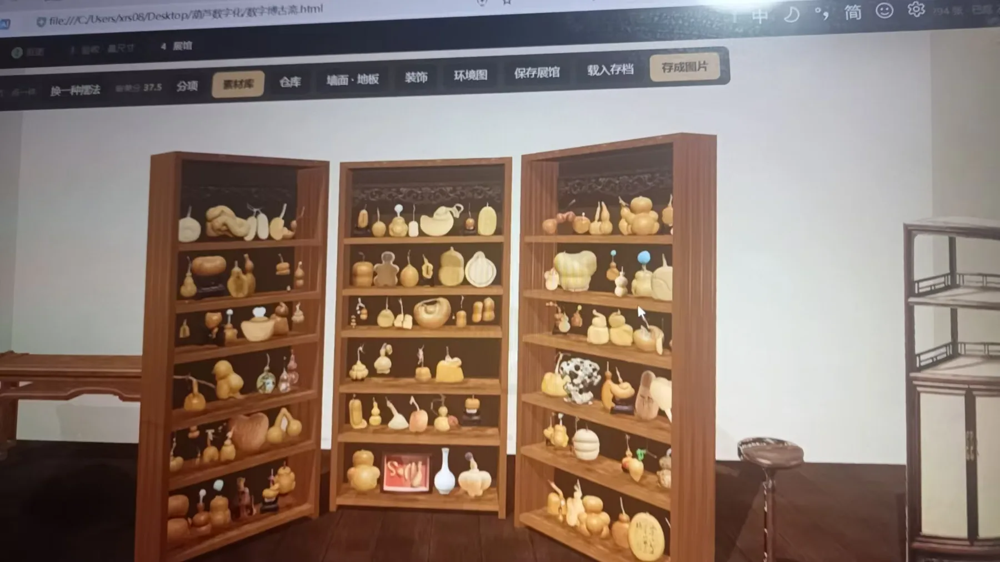

UI & Systems / PROJECT 01
Hulu Digital Museum
葫芦数字博物馆
从朋友的真实葫芦收藏出发，把手机照片变成可以自由策展的数字展品。
- ROLE
- 数字展陈、藏品上架与家具皮肤设计
- TIME
- 项目年份待确认
- TOOLS
- 手机拍摄、自动抠图、图片式伪 3D；具体模型服务未披露
- TYPE
- Collaborative MVP
- STATUS
- Private MVP / Public walkthrough

01 / OVERVIEW
Overview
朋友是一位葫芦手艺人，家中收藏了各式各样的葫芦。这个 MVP 让他用手机拍摄藏品，上传后自动分离背景，再把抠出的照片作为伪 3D 展品放进空间：书架、桌子、矮柜，甚至地面都可以陈列，还能一键打乱上架藏品、尝试新的布局。我参与数字展陈、葫芦上架与陈列，并设计不同的家具皮肤。这里保留原项目照片，以一段简短的策展演示介绍整个流程。
02 / PROBLEM
Problem
朋友是一位葫芦手艺人，真实藏品数量较多。项目的起点不是再做一个图片相册，而是让藏品保留形态与纹理，并能在一个可调整的空间中被观看。
03 / OBSERVATION / INSIGHT
Observation / Insight
照片是低门槛的数字入口，策展则需要位置、尺度和家具等组织线索。这里的洞察由已有收藏场景与项目说明整理，并非独立用户访谈结论。
04 / DESIGN GOAL
Design Goal
串起拍照、抠图、上架与布展的最小流程；在不要求完整三维建模的前提下，让收藏者尝试不同陈列方式。
05 / AI OPPORTUNITY
AI Opportunity
AI 的明确机会是分离照片背景，减少逐件手工处理。人仍然决定拍摄质量、保留哪些藏品、陈列位置与家具皮肤。本站演示不会假装提供在线抠图模型服务。
06 / USER FLOW
User Flow
从入口到完成任务，保留最短、可以解释的操作链路。
- 01手机拍照
- 02上传藏品
- 03自动分离背景
- 04伪 3D 图片展品
- 05自由陈列与换肤
依据现有项目资料整理的流程图，不代表另行开展了用户访谈或行为研究。
07 / INFORMATION ARCHITECTURE
Information Architecture
把核心对象、操作和反馈分别组织，避免功能堆叠掩盖主要任务。
藏品
- 照片上传
- 背景分离
- 展品上架
展陈空间
- 书架与桌面
- 矮柜与地面
- 重排布局
视觉皮肤
- 家具样式
- 空间氛围
- 陈列预览
08 / EXPLORATION
Exploration
以书架、桌面、矮柜和地面作为不同的展陈载体；通过家具皮肤与一键重排探索同一批藏品的不同呈现，而不是先扩张成复杂的三维编辑器。
09 / PROTOTYPE
Prototype
公开的是策展操作演示；原项目中的自动抠图后台并未在本站开放。
10 / AI WORKFLOW
AI Workflow
把人的设计判断与 AI 可以辅助的工作分开说明。
Human directs.
- 判断照片是否清晰
- 确定展品尺度与位置
- 选择家具皮肤与构图
AI assists.
- 分离背景（原 MVP 描述）
- 形成图片式展品
- 辅助重复处理；演示不调用真实服务
11 / BUILD / VIBE CODING
Build / Vibe Coding
原项目描述了手机上传与自动抠图的 MVP。作品集中的 32 秒流程演示使用示意照片、抠图与陈列，解释原 MVP 的用法，不等同于把原后台部署到公网。
12 / TESTING
Testing
现有证据包括原项目照片与流程演示。没有提供抠图准确率、正式用户任务测试或商业数据，因此不作相关成果声明。
13 / ITERATION
Iteration
当前展示覆盖多种陈列位置与家具皮肤。资料未提供版本对比或迭代日期，本页不编造前后提升；后续应优先检查上传失败提示、边缘确认和重新编辑。
14 / OUTCOME
Outcome
将真实收藏需求整理成一条可解释的 MVP 链路，并保留数字展陈、藏品陈列与家具皮肤的设计证据。成果是项目与展示样例，不是经营或增长指标。
15 / REFLECTION
Reflection
AI 适合降低内容准备的成本，策展权仍应该留给收藏者。下一步验证重点是“能否独立完成一次上架并找回它”，而不是增加更多生成效果。
CONTINUE EXPLORING